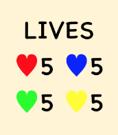

How to Play
- The goal is to push opponents’ squares off the board.
- Each player decides their color.
- In the beginning, each player has one square.
- In each turn, the player can move their squares by swiping upwards, downwards, to the left or to the right.
- New squares will be given to each player at the starting point as the game goes on.
- This shows the number of moves after which a new square will appear.

- But if the starting point is occupied when a new square is due, that new square will not appear.
- All squares of each player move simultaneously by each swipe.
- White squares are “walls”, which block the movement of the square(s) that move(s) against them.
- In some maps, there are slippery tiles. If a square moves onto a slippery tile and there is nothing blocking it, it will slip forward one more square.
- For every square pushed off the board, the player loses one life.
- This shows the number of remaining lives of each player.

- When all lives are lost, the player is out of the game but all their remaining squares will stay and become gray, and remain moveable.
- The last man standing wins.
How to Have a Multi-device Game
- One of the players taps on "HOST" on their own device.
- All the detected devices around will be shown.
- All other players tap on "JOIN" so they can be detected.
- Players can be detected if they are connected to the same WiFi network or their Bluetooth is turned on.
- The player who tapped on "HOST" can then tap on the devices that they want to connect to the game.
- After all the devices have been connected, the player who tapped on "HOST" taps on the start button to start the game.
- The color of each player is decided automatically.